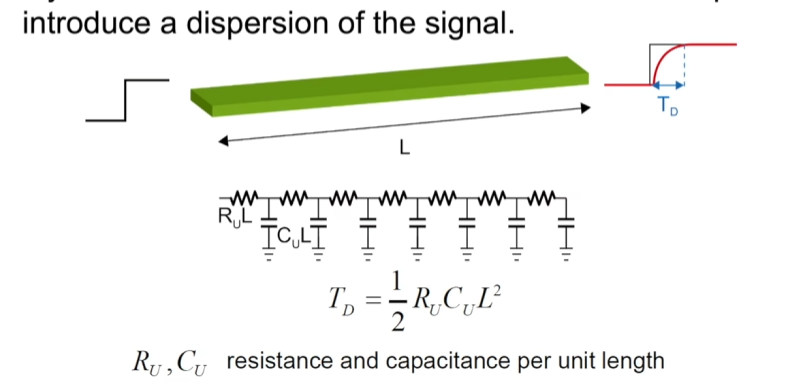
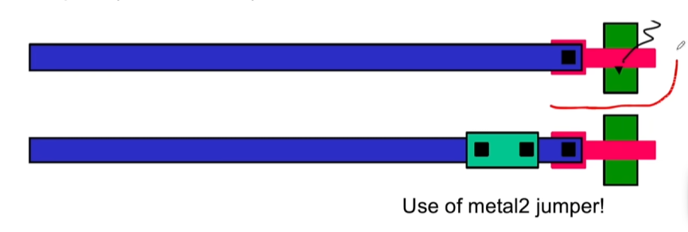
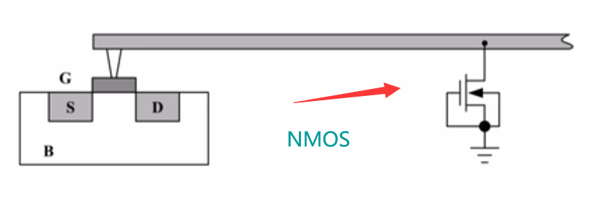
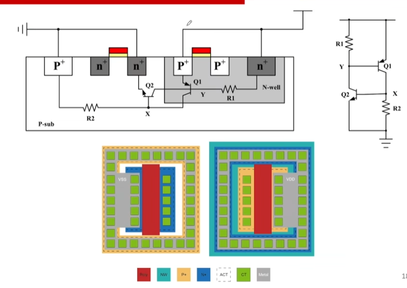
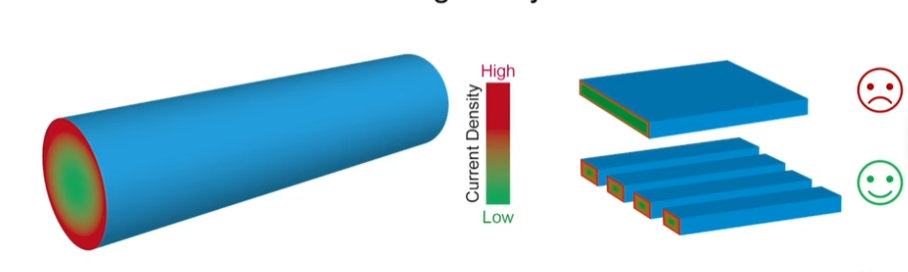
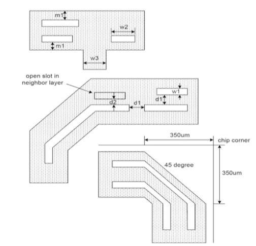

一.版图的层次
1.金属互联层
· 180nm下，金属互连层的典型厚度为$0.5\mu m$

(1)电阻估算
$R=R_{square,方块}·\frac{W}{L}$
(2)电容估算(注意单位)
①Plate Cap: 上下表面电容$/\mu m ^2$
②Fringe Cap: 边缘电容 $/\mu m$
2.Via层
$M_{1}→M_{2}$使用的是$Via1$
3.$ACT$层
形成$mosfet$的位置，其余用栅氧或$STI$隔离
4.$Poly$层
形成$Gate$，也可以充当导线（但是$R_{U}$极大，约比Metal层大了几千倍）
★二.失效机理
1.Antenna effect:天线效应(长宽金属线)
· 在加工刻蚀过程中，$Metal$吸收大量带点离子，使得$Metal$电压过高，击穿$Mosfet$
解决：
①高层次跳线（因为$M2$比$M1$加工慢一步)

②$PN$结反向击穿特性泄放

2.Soft connection 软连接(忘记画衬底)
· 忘记画衬底，衬底由于$IR-Drop$，使得衬底电压不为$0/V_{DD}$
3.Latch-up(闩锁效应，同时出现大pmos、nmos)

· 同时出现大pmos、nmos（比如反相器）时，$p-sub$与$N-well$有电流经过时，$Latch-up$通过正反馈被打开，从而在$V_{DD}-gnd$间形成一个短路回路。
★解决:加入$guard-ring$，让$Y$锁定在$V_{DD}$，$X$锁定在$gnd$
4.$Electro-migration$ (电迁移，大电流烧断现象)
大电流撞击使得金属原子丢失，从而形成自身断路或者导线间短路。
解决：看手册决定$L$，注意也要考虑$Via、CT$
注意：由于趋肤效应，最好并联导线而非连接成一大块

5.$Metal-stress$金属应力(大宽$Metal$线)
· 在加工时由于温度等因素大$Metal$受到应力而断裂或者褶皱
解决：在$Metal$上打空洞

6.$Density$密度(要达到一定密度)
· 原因：在打磨$wafer$时，$FOX(SiO_{2})$耐打磨，而$Metal$不耐打磨，从而芯片被打磨的地方会不平整
但是$fab$厂一般会有自动化工具给你加上$Metal$，从而引入寄生电容，因此，为了避免这种问题，最好自己处理了。